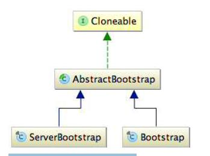
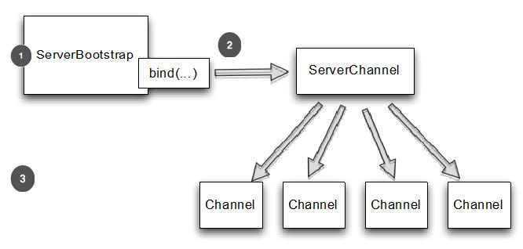
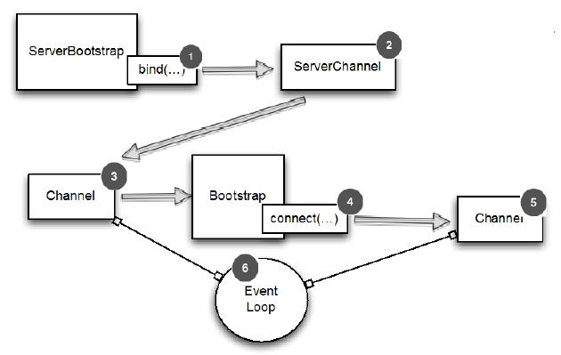

引导
Table of Contents
本章介绍：
- 引导客户端和服务器
- 从Channel引导客户端
- 添加 ChannelHandler
- 使用 ChannelOption 和属性
通过 ChannelPipeline 、ChannelHandler和编解码器提供工具，可以处理一个广泛的数据处理需求。但是可能会问,“我创建了组件后,如何将其组装形成一个应用程序?”
答案是 bootstrapping 。到目前为止使用这个词有点模糊,时间可以来定义它。在最简单的条件下,引导就是配置应用程序的过程。但我们看到的,不仅仅如此； Netty的引导客户端和服务器的类从网络基础设施使应用程序代码在后台可以连接和启动所有的组件 。简而言之，引导使 Netty 应用程序完整
引导
类型
Netty包括两种不同类型的引导：不仅仅是 服务器 和 客户 的引导，更有用的是考虑他们的目的是支持的应用程序功能。从这个意义上讲, 服务器 应用程序把一个 父 管道接受连接和创建 子 管道,而 客户端 很可能只需要一个单一的、非 父 对所有网络交互的管道（对于无连接的比如 UDP 协议也是一样）
如图9.1所示,两个引导实现自一个名为 AbstractBootstrap 的超类：

前面介绍了许多共同关注的话题,同样适用于客户端和服务器。这些都是由 AbstractBootstrap 处理,从而防止重复的功能和代码。专业引导类可以完全专注于它们独特的需要关心的地方
克隆引导类
经常需要创建多个通道具有相似或相同的设置。支持这种模式而不需要为每个通道创建和配置一个新的引导实例, AbstractBootstrap 已经被标记为 Cloneable。调用 clone() 在一个已经配置引导将返回另一个引导实例并且是立即可用
因为这将创建只是 EventLoopGroup 浅拷贝,后者将会共享所有的克隆管道 这是可以接受的,因为往往是克隆的管道是短暂的，典型示例是管道创建用于 HTTP 请求
引导客户端
当需要引导客户端或一些无连接协议时，需要使用Bootstrap类。 在本节中,将回顾可用的各种方法引导客户端,引导线程,和可用的管道实现
Bootstap常用方法
下表是 Bootstrap 的常用方法，其中很多是继承自 AbstractBootstrap：
| 名称 | 描述 |
| group | 设置 EventLoopGroup 用于处理所有的 Channel 的事件 |
| channel channelFactory | channel() 指定Channel的实现类。如果类没有提供一个默认的构造函数,你可以调用channelFactory()来指定一个工厂类被bind()调用 |
| localAddress | 指定应该绑定到本地地址Channel。如果不提供,将由操作系统创建一个随机的。或者,您可以使用bind()或connect()指定localAddress |
| option | 设置ChannelOption应用于新创建Channel的ChannelConfig。这些选项将被bind或connect设置在通道,这取决于哪个被首先调用。这个方法在创建管道后没有影响。所支持ChannelOption取决于使用的管道类型。请参考9.6节和 ChannelConfig 的 API 文档 的 Channel 类型使用 |
| attr | 这些选项将被bind或connect设置在通道,这取决于哪个被首先调用。这个方法在创建管道后没有影响。请参考9.6节 |
| handler | 设置添加到 ChannelPipeline 中的 ChannelHandler 接收事件通知 |
| clone | 创建一个当前 Bootstrap的克隆拥有原来相同的设置 |
| remoteAddress | 设置远程地址。此外可以通过connect()指定 |
| connect | 连接到远端，返回一个ChannelFuture, 用于通知连接操作完成 |
| bind | 将通道绑定并返回一个 ChannelFuture,用于通知绑定操作完成后,必须调用 Channel.connect() 来建立连接 |
过程
Bootstrap 类负责创建管道给客户或应用程序，利用无连接协议和在调用 bind() 或 connect() 之后 下图展示了如何工作：

- 当 bind() 调用时，Bootstrap 将创建一个新的管道, 当 connect() 调用在 Channel 来建立连接
- Bootstrap 将创建一个新的管道, 当 connect() 调用时
- 新的 Channel
Bootstrap 实例
EventLoopGroup group = new NioEventLoopGroup(); Bootstrap bootstrap = new Bootstrap(); //1 创建一个新的 Bootstrap 来创建和连接到新的客户端管道 bootstrap.group(group) //2 指定 EventLoopGroup .channel(NioSocketChannel.class) //3 指定 Channel 实现来使用 .handler(new SimpleChannelInboundHandler<ByteBuf>() { //4 设置处理器给 Channel 的事件和数据 @Override protected void channeRead0( ChannelHandlerContext channelHandlerContext, ByteBuf byteBuf) throws Exception { System.out.println("Received data"); byteBuf.clear(); } }); ChannelFuture future = bootstrap.connect( new InetSocketAddress("www.manning.com", 80)); //5 连接到远端主机 future.addListener(new ChannelFutureListener() { @Override public void operationComplete(ChannelFuture channelFuture) throws Exception { if (channelFuture.isSuccess()) { System.out.println("Connection established"); } else { System.err.println("Connection attempt failed"); channelFuture.cause().printStackTrace(); } } });
Bootstrap 提供了一个fluent语法 示例中使用的方法(除了connect()) 由 Bootstrap 返回实例本身的引用链接他们
兼容性
Channel 的实现和 EventLoop 的处理过程在 EventLoopGroup 中必须兼容．哪些 Channel 兼容哪些 EventLoopGroup 可以查看 API 文档。经验显示，相兼容的实现一般在同一个包下面，例如使用NioEventLoop，NioEventLoopGroup 和 NioServerSocketChannel 在一起。请注意，这些都是前缀 Nio ，然后 不会用这些代替另一个实现和另一个前缀 ，如“Oio”，也就是说 OioEventLoopGroup 和NioServerSocketChannel 是不相容的
Channel 和 EventLoopGroup 的 EventLoop 也必须兼容 ，例如NioEventLoop、NioEventLoopGroup、NioServerSocketChannel是相容的，但是 OioEventLoopGroup 和 NioServerSocketChannel 是不相容的。从类名可以看出前缀是 Nio 的只能和 Nio 的一起使用
EventLoop 分配给该 Channel 负责处理 Channel 的所有操作。 当执行一个方法,该方法返回一个 ChannelFuture ，它将在分配给 Channel 的 EventLoop 执行 EventLoopGroup 包含许多 EventLoops 和分配一个 EventLoop 通道时注册
下面代码所示的结果,试图使用一个 Channel 类型与一个 EventLoopGroup 兼容：
EventLoopGroup group = new NioEventLoopGroup(); Bootstrap bootstrap = new Bootstrap(); //1 创建新的 Bootstrap 来创建新的客户端管道 bootstrap.group(group) //2 注册 EventLoopGroup 用于获取 EventLoop .channel(OioSocketChannel.class) //3 指定要使用的 Channel 类。通知我们使用 NIO 版本用于 EventLoopGroup ， OIO 用于 Channel .handler(new SimpleChannelInboundHandler<ByteBuf>() { //4 设置处理器用于管道的 I/O 事件和数据 @Override protected void channelRead0( ChannelHandlerContext channelHandlerContext, ByteBuf byteBuf) throws Exception { System.out.println("Reveived data"); byteBuf.clear(); } }); ChannelFuture future = bootstrap.connect( new InetSocketAddress("www.manning.com", 80)); //5 尝试连接到远端。当 NioEventLoopGroup 和 OioSocketChannel 不兼容时，会抛出 IllegalStateException 异常 future.syncUninterruptibly();
Exception in thread "main" java.lang.IllegalStateException: incompatible event loop type: io.netty.channel.nio.NioEventLoop at io.netty.channel.AbstractChannel$AbstractUnsafe.register(AbstractChannel.java:5 71) ...
出现 IllegalStateException 的其他情况是，在 bind() 或 connect() 调用前 调用需要设置参数的方法调用失败时，包括：
- group()
- channel() 或 channnelFactory()
- handler()
handler() 方法尤为重要,因为这些 ChannelPipeline 需要适当配置。 一旦提供了这些参数,应用程序将充分利用 Netty 的能力
引导服务器
服务器的引导共用了客户端引导的一些逻辑
ServerBootstrap 的方法
| 方法 | 描述 |
| group | 设置 EventLoopGroup 用于 ServerBootstrap。这个 EventLoopGroup 提供 ServerChannel 的 I/O 并且接收 Channel |
| channel channelFactory | channel() 指定 Channel 的实现类。如果管道没有提供一个默认的构造函数,你可以提供一个 ChannelFactory |
| localAddress | 指定 ServerChannel 实例化的类。如果不提供，将由操作系统创建一个随机的。或者，可以使用 bind() 或 connect()指定localAddress |
| option | 指定一个 ChannelOption 来用于新创建的 ServerChannel 的 ChannelConfig 。这些选项将被设置在管道的 bind() 或 connect(),这取决于谁首先被调用。在此调用这些方法之后设置或更改 ChannelOption 是无效的。所支持 ChannelOption 取决于使用的管道类型。请参考9.6节和 ChannelConfig 的 API 文档 的 Channel 类型使用 |
| childOption | 当管道已被接受，指定一个 ChannelOption 应用于 Channel 的 ChannelConfig |
| attr | 指定 ServerChannel 的属性。这些属性可以被 管道的 bind() 设置。当调用 bind() 之后，修改它们不会生效 |
| childAttr | 应用属性到接收到的管道上。后续调用没有效果 |
| handler | 设置添加到 ServerChannel 的 ChannelPipeline 中的 ChannelHandler。 具体详见 childHandler() 描述 |
| childHandler | 设置添加到接收到的 Channel 的 ChannelPipeline 中的 ChannelHandler。handler() 和 childHandler()之间的区别是前者是接收和处理ServerChannel，同时 childHandler() 添加处理器用于处理和接收 Channel。后者代表一个套接字绑定到一个远端 |
| clone | 克隆 ServerBootstrap 用于连接到不同的远端，通过设置相同的原始 ServerBoostrap |
| bind | 绑定 ServerChannel 并且返回一个 ChannelFuture，用于通知连接操作完成了（结果可以是成功或者失败） |
过程
ServerBootstrap 中的 childHandler(), childAttr() 和 childOption() 是常用的服务器应用的操作。具体来说,ServerChannel实现负责创建子 Channel，它代表接受连接。因此引导 ServerChannel 的 ServerBootstrap ,提供这些方法来简化接收的 Channel 对 ChannelConfig 应用设置的任务
图9.3显示了 ServerChannel 创建 ServerBootstrap 在 bind()，后者管理大量的子 Channel：

- 当调用 bind() 后 ServerBootstrap 将创建一个新的管道，这个管道将会在绑定成功后接收子管道
- 接收新连接给每个子管道
- 接收连接的 Channel
记住： child 的方法都是操作在子的 Channel，被 ServerChannel 管理
下面代码展示创建一个 NioServerSocketChannel实例 bind() 。这个 NioServerChannel 负责接受新连接和创建NioSocketChannel 实例：
NioEventLoopGroup group = new NioEventLoopGroup(); ServerBootstrap bootstrap = new ServerBootstrap(); //1 创建要给新的 ServerBootstrap 来创建新的 SocketChannel 管道并绑定他们 bootstrap.group(group) //2 指定 EventLoopGroup 用于从注册的 ServerChannel 中获取EventLoop 和接收到的管道 .channel(NioServerSocketChannel.class) //3 指定要使用的管道类 .childHandler(new SimpleChannelInboundHandler<ByteBuf>() { //4 设置子处理器用于处理接收的管道的 I/O 和数据 @Override protected void channelRead0(ChannelHandlerContext ctx, ByteBuf byteBuf) throws Exception { System.out.println("Reveived data"); byteBuf.clear(); } } ); ChannelFuture future = bootstrap.bind(new InetSocketAddress(8080)); //5 通过配置引导来绑定管道 future.addListener(new ChannelFutureListener() { @Override public void operationComplete(ChannelFuture channelFuture) throws Exception { if (channelFuture.isSuccess()) { System.out.println("Server bound"); } else { System.err.println("Bound attempt failed"); channelFuture.cause().printStackTrace(); } } } );
从 Channel 引导客户端
有时可能需要引导客户端 Channel 从另一个 Channel。例如，正在编写一个代理或从其他系统需要检索数据，许多 Netty 的应用程序集成现有系统（web 服务或数据库）
当然可以创建一个新的 Bootstrap 但这个解决方案不一定有效： 1. 需要创建另一个 EventLoop 给新客户端 Channel 的 2. Channel 将会需要在不同的 Thread 间进行上下文切换
幸运的是，由于 EventLoop 继承自 EventLoopGroup ，所以可以通过 传递接收到的 Channel 的 EventLoop 到 Bootstrap 的 group() 方法 。这允许客户端 Channel 来操作相同的EventLoop，这样就能消除了额外的线程创建和所有相关的上下文切换的开销
共享 EventLoop
当分享一个 EventLoop ，保证所有 Channel 分配给 EventLoop 将使用相同的线程，消除上下文切换和相关的开销。请记住： 一个EventLoop分配给一个线程执行操作
共享一个 EventLoop 描述如下：

- 当 bind() 调用时，ServerBootstrap 创建一个新的ServerChannel 。 当绑定成功后，这个管道就能接收子管道了
- ServerChannel 接收新连接并且创建子管道来服务它们
- Channel 用于接收到的连接
- 管道自己创建了 Bootstrap，用于当 connect() 调用时创建一个新的管道
- 新管道连接到远端
- 在 EventLoop 接收通过 connect() 创建后就在管道间共享
实例
下面代码实现 EventLoop 共享，包括设置 EventLoop 引导通过Bootstrap.eventLoop() 方法：
ServerBootstrap bootstrap = new ServerBootstrap(); //1 创建一个新的 ServerBootstrap 来创建新的 SocketChannel 管道并且绑定他们 bootstrap.group(new NioEventLoopGroup(), //2 指定 EventLoopGroups 从 ServerChannel 和接收到的管道来注册并获取 EventLoops new NioEventLoopGroup()).channel(NioServerSocketChannel.class) //3指定 Channel 类来使用 .childHandler( //4 设置处理器用于处理接收到的管道的 I/O 和数据 new SimpleChannelInboundHandler<ByteBuf>() { ChannelFuture connectFuture; @Override public void channelActive(ChannelHandlerContext ctx) throws Exception { Bootstrap bootstrap = new Bootstrap(); //5 创建一个新的 Bootstrap 来连接到远程主机 bootstrap.channel(NioSocketChannel.class) //6 设置管道类 .handler(new SimpleChannelInboundHandler<ByteBuf>() { //7 设置处理器来处理 I/O @Override protected void channelRead0(ChannelHandlerContext ctx, ByteBuf in) throws Exception { System.out.println("Reveived data"); } }); bootstrap.group(ctx.channel().eventLoop()); //8 使用相同的 EventLoop 作为分配到接收的管道 connectFuture = bootstrap.connect(new InetSocketAddress("www.manning.com", 80)); //9 连接到远端 } @Override protected void channelRead0(ChannelHandlerContext channelHandlerContext, ByteBuf byteBuf) throws Exception { if (connectFuture.isDone()) { // do something with the data //10 连接完成处理业务逻辑 (比如, proxy) } } }); ChannelFuture future = bootstrap.bind(new InetSocketAddress(8080)); //11 通过配置了的 Bootstrap 来绑定到管道 future.addListener(new ChannelFutureListener() { @Override public void operationComplete(ChannelFuture channelFuture) throws Exception { if (channelFuture.isSuccess()) { System.out.println("Server bound"); } else { System.err.println("Bound attempt failed"); channelFuture.cause().printStackTrace(); } } });
注意，新的 EventLoop 会创建一个新的 Thread EventLoop 实例应该尽量重用。或者限制实例的数量来避免耗尽系统资源
在一个引导中添加多个 ChannelHandler
在所有的例子代码中，在引导过程中通过 handler() 或childHandler() 都只添加了一个 ChannelHandler 实例，对于简单的程序可能足够，但是对于复杂的程序则无法满足需求。例如，某个程序必须支持多个协议，如 HTTP、WebSocket。若在一个 ChannelHandler中处理这些协议将导致一个庞大而复杂的 ChannelHandler。Netty 通过添加多个 ChannelHandler，从而使每个 ChannelHandler 分工明确，结构清晰
Netty 的一个优势是可以在 ChannelPipeline 中堆叠很多ChannelHandler ，并且可以最大程度的重用代码
Netty 提供 ChannelInitializer 抽象类用来初始化 ChannelPipeline 中的 ChannelHandler。ChannelInitializer是一个特殊的 ChannelHandler， 通道被注册到 EventLoop 后就会调用ChannelInitializer，并允许将 ChannelHandler 添加到CHannelPipeline；完成初始化通道后，这个特殊的 ChannelHandler 初始化器会从 ChannelPipeline 中自动删除
实例
看下面代码：
ServerBootstrap bootstrap = new ServerBootstrap(); //1 创建一个新的 ServerBootstrap 来创建和绑定新的 Channel bootstrap.group(new NioEventLoopGroup(), new NioEventLoopGroup()) //2 指定 EventLoopGroups 从 ServerChannel 和接收到的管道来注册并获取 EventLoops .channel(NioServerSocketChannel.class) //3 指定 Channel 类来使用 .childHandler(new ChannelInitializerImpl()); //4 设置处理器用于处理接收到的管道的 I/O 和数据 ChannelFuture future = bootstrap.bind(new InetSocketAddress(8080)); //5 通过配置的引导来绑定管道 future.sync(); final class ChannelInitializerImpl extends ChannelInitializer<Channel> { //6 ChannelInitializer 负责设置 ChannelPipeline @Override protected void initChannel(Channel ch) throws Exception { ChannelPipeline pipeline = ch.pipeline(); //7 现 initChannel() 来添加需要的处理器到 ChannelPipeline。一旦完成了这方法 ChannelInitializer 将会从 ChannelPipeline 删除自身 pipeline.addLast(new HttpClientCodec()); pipeline.addLast(new HttpObjectAggregator(Integer.MAX_VALUE)); } }
通过 ChannelInitializer，Netty 允许你添加你程序所需的多个 ChannelHandler 到 ChannelPipeline
使用Netty 的 ChannelOption 和属性
比较麻烦的是创建通道后不得不手动配置每个通道，为了避免这种情况，Netty 提供了 ChannelOption 来帮助引导配置。这些选项会自动应用到引导创建的所有通道，可用的各种选项可以配置底层连接的详细信息，如通道 keep-alive（保持活跃） 或 timeout（超时） 的特性。
Netty 应用程序通常会与组织或公司其他的软件进行集成，在某些情况下，Netty 的组件如 Channel 在 Netty 正常生命周期外使用； Netty 的提供了 *抽象 AttributeMap 集合*，这是由 Netty的管道和引导类和 AttributeKey常见类用于插入和检索属性值。属性允许安全的关联任何数据项与客户端和服务器的 Channel
配置和属性实例
例如，考虑一个服务器应用程序跟踪用户和 Channel 之间的关系。这可以通过存储用户 ID 作为 Channel 的一个属性。类似的技术可以用来路由消息到基于用户 ID 或关闭基于用户活动的一个管道：
final AttributeKey<Integer> id = new AttributeKey<Integer>("ID"); //1 新建一个 AttributeKey 用来存储属性值 Bootstrap bootstrap = new Bootstrap(); //2 新建 Bootstrap 用来创建客户端管道并连接他们 bootstrap.group(new NioEventLoopGroup()) //3 指定 EventLoopGroups 从和接收到的管道来注册并获取 EventLoop .channel(NioSocketChannel.class) //4 指定 Channel 类 .handler(new SimpleChannelInboundHandler<ByteBuf>() { //5 设置处理器来处理管道的 I/O 和数据 @Override public void channelRegistered(ChannelHandlerContext ctx) throws Exception { Integer idValue = ctx.channel().attr(id).get(); //6 检索 AttributeKey 的属性及其值 // do something with the idValue } @Override protected void channelRead0(ChannelHandlerContext channelHandlerContext, ByteBuf byteBuf) throws Exception { System.out.println("Reveived data"); } }); bootstrap.option(ChannelOption.SO_KEEPALIVE, true).option(ChannelOption.CONNECT_TIMEOUT_MILLIS, 5000); //7 设置 ChannelOption 将会设置在管道在连接或者绑定 bootstrap.attr(id, 123456); //8 存储 id 属性 ChannelFuture future = bootstrap.connect(new InetSocketAddress("www.manning.com", 80)); //9 通过配置的 Bootstrap 来连接到远程主机 future.syncUninterruptibly();
关闭之前已经引导的客户端或服务器
引导应用程序启动并运行，但是迟早也需要关闭它。当然你可以让 JVM处理所有退出但这不会满足 优雅 的定义，是指干净地释放资源。关闭一个Netty 的应用程序并不复杂，但有几件事要记住：
- 关闭 EventLoopGroup 将处理任何悬而未决的事件和任务并随后释放所有活动线程。EventLoopGroup.shutdownGracefully()这个调用将返回一个 Future 用来通知关闭完成
- shutdownGracefully() 也是一个异步操作，所以 需要阻塞直到它完成或注册一个侦听器直到返回的 Future 来通知完成
EventLoopGroup group = new NioEventLoopGroup() //1 创建 EventLoopGroup 用于处理 I/O Bootstrap bootstrap = new Bootstrap(); //2 创建一个新的 Bootstrap 并且配置他 bootstrap.group(group) .channel(NioSocketChannel.class); ... ... Future<?> future = group.shutdownGracefully(); //3 最终优雅的关闭 EventLoopGroup 释放资源。这个也会关闭中当前使用的 Channel // block until the group has shutdown future.sync();
当然在调用EventLoopGroup.shutdownGracefully()之前可以显示调用 Channel.close() 关闭活动管道 在所有情况下，记得关闭EventLoopGroup 本身